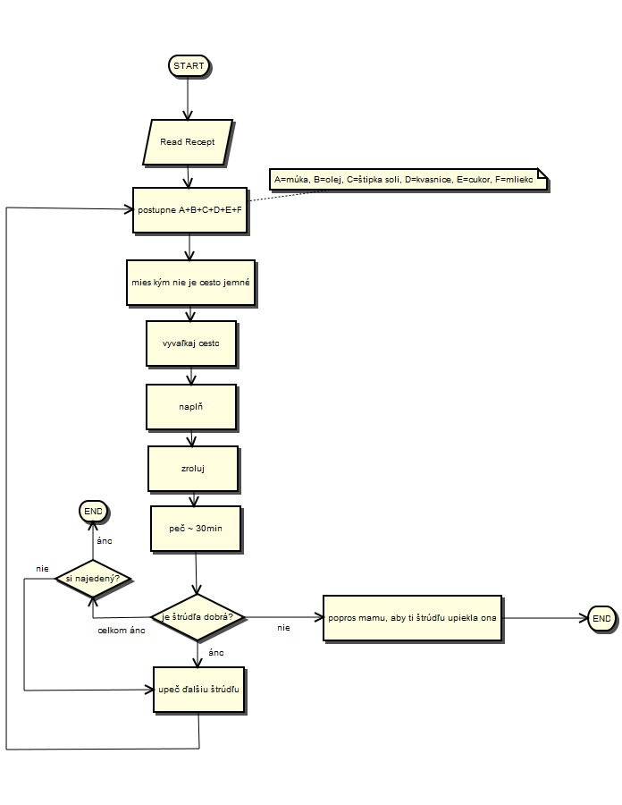

Vývojové diagramy (FlowChart Diagrams)
Vývojové diagramy sú jedny z najjednoduchších a najstarších princípov popisu algoritmov, prípadne iných činností.
Ak máte záujem zistiť, ako pracovať s vývojovými diagramami, odporúčame navštíviť Vývojové diagramy v UML .FRI (FlowChart Diagrams)
Príklad FlowChart diagramu, ktorý možno vytvoriť v UML .FRI dizajnéri:
